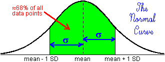

Systematic vs. Random Error
It is instructive to look at the differences between systematic
error and random error to more fully define these errors.
SYSTEMATIC Error:
- is always in the same "direction" (often called
bias) away from the "true" value
- is often difficult to find
- can be reduced by improving on the design of the experiment, but
the magnitude of any remaining systematic error is impossible to
evaluate exactly (otherwise, one would be able to account for it in
the calculations and thus eliminate it)
- is indicated if there is a discrepancy between the observed mean
and an external standard, if there is one
RANDOM Error:
- causes individual readings to fluctuate above and below the mean
of the individual readings (the average of the individual readings
from their mean is zero)
- is easy to find (any fluctuation in individual readings is
evidence of random error)
- can be reduced by taking more readings and can be
quantified
- can be quantified by the standard deviation (SD)
Random error tends to cause individual readings to be
normally-distributed:

Random error causes the data to be "clumped" around the
mean, with about 68% of all the points within one SD of the
mean. Systematic error causes the mean to be different from the "true"
value.